Some key data sets, for learning or general use have been included in
the library. Access them using the :: accessor:
str(rcahelpr::hpsa_primarycare)## 'data.frame': 230 obs. of 17 variables:
## $ HPSA_Discipline_Class : chr "Primary Care" "Primary Care" "Primary Care" "Primary Care" ...
## $ HPSA_Name : chr "Low Income - MSSA 78.2ddd/Bell SW/Cudahy/Maywood/V" "MSSA 6/Pioneer" "MSSA 78.2uuu/Athens" "MSSA 137/Isleton" ...
## $ HPSA_ID : chr "1061017434" "1061018308" "1061038158" "1061081242" ...
## $ County_Equivalent_Name : chr "Los Angeles" "Amador" "Los Angeles" "Sacramento" ...
## $ Designation_Type : chr "HPSA Population" "Geographic HPSA" "High Needs Geographic HPSA" "Geographic HPSA" ...
## $ HPSA_Population_Type : chr "Low Income Population HPSA" "Geographic Population" "Geographic Population" "Geographic Population" ...
## $ HPSA_Score : int 13 16 18 9 12 15 10 9 19 11 ...
## $ PC_MCTA_Score : int NA NA NA NA NA 18 NA 13 NA NA ...
## $ HPSA_Provider_Ratio_Goal : chr "3000:1" "3500:1" "3000:1" "3500:1" ...
## $ HPSA_FTE : num 0.16 0.1 3.75 0.95 9.26 3.2 1.75 27.5 4 0 ...
## $ HPSA_Designation_Population : int 53040 5848 84994 5597 39476 17795 13687 101329 54088 7045 ...
## $ HPSA_Formal_Ratio : chr "331500:1" "58480:1" "22665:1" "5892:1" ...
## $ HPSA_Shortage : num 17.52 1.57 24.58 0.65 3.9 ...
## $ HPSA_Status : chr "Proposed For Withdrawal" "Proposed For Withdrawal" "Proposed For Withdrawal" "Proposed For Withdrawal" ...
## $ HPSA_Designation_Date : chr "9/12/2011" "7/11/2008" "10/9/2012" "5/13/2008" ...
## $ HPSA_Designation_Last_Update_Dat: chr "9/10/2021" "9/10/2021" "5/20/2022" "9/10/2021" ...
## $ Data_Warehouse_Record_Create_Dat: chr "1/17/2023" "1/17/2023" "1/17/2023" "1/17/2023" ...This means that we can use these data for a range of purposes, such as pairing them with other libraries and analyzing it:
# Load the graphing library ggplot2 and data management library dplyr
library(dplyr)
library(forcats)
library(ggplot2)
# Wrangle some data to identify the average Health Professional Shortage Area
# (HPSA) score in a given county:
demo <- rcahelpr::hpsa_primarycare %>%
group_by(County_Equivalent_Name) %>%
summarize(mean_hpsa_score = mean(HPSA_Score),
total_hpsa_population = sum(HPSA_Designation_Population))
# Make a beautiful graph
ggplot(data = demo) +
geom_point(aes(x = total_hpsa_population , y = fct_rev(County_Equivalent_Name),
color = mean_hpsa_score)) +
geom_segment(aes(x = 0 , xend = total_hpsa_population ,
y = County_Equivalent_Name, yend = County_Equivalent_Name,
color = mean_hpsa_score)) +
theme_minimal() +
labs(title = "Affected Populations in HPSA by County",
subtitle = "HPSA scores determine priorities for the assignment of clinitians",
caption = "Data from CCHS") +
xlab("Total Population in all County HPSAs") +
ylab("") +
scale_color_gradient2(low="#F5F5DC", mid = "#FFA500", high="#8B0000",
midpoint = mean(demo$mean_hpsa_score),
name = "Average County HPSA Score") +
theme(legend.position = "bottom")
Also, the data and functions in this package can be combined:
rcahelpr::make_codebook(input_df = rcahelpr::hpsa_primarycare, return_df = FALSE,
escape = FALSE)| Variable Name | Data Class | Valid Values | Statistics | Unique Values | Missing Values |
|---|---|---|---|---|---|
| HPSA_Discipline_Class | Character | Unique strings: Primary Care. | 1 Unique strings: Primary Care | 1 | 0 (0%) |
| HPSA_Name | Character | Unique strings (n=230): Low Income - MSSA 78.2ddd/Bell SW/Cudahy/Maywood/V, MSSA 6/Pioneer, MSSA 78.2uuu/Athens, and more. |
230 unique strings, top three: Colusa County (n=1) LI-MFW-MSSA 176b/East Palo Alto (n=1) LI-MFW/MSSA 186 Anderson (n=1) |
230 | 0 (0%) |
| HPSA_ID | Character | Unique strings (n=230): 1061017434, 1061018308, 1061038158, and more. |
230 unique strings, top three: 1061017434 (n=1) 1061018308 (n=1) 1061038158 (n=1) |
230 | 0 (0%) |
| County_Equivalent_Name | Character | Unique strings (n=52): Los Angeles, Amador, Sacramento, and more. |
52 unique strings, top three: Los Angeles (n=42) San Bernardino (n=15) Kern (n=14) |
52 | 0 (0%) |
| Designation_Type | Character | Unique strings: HPSA Population, Geographic HPSA, High Needs Geographic HPSA. | 3 Unique strings: HPSA Population, Geographic HPSA, High Needs Geographic HPSA | 3 | 0 (0%) |
| HPSA_Population_Type | Character | Unique strings (n=6): Low Income Population HPSA, Geographic Population, Low Income Migrant Farmworker Population HPSA, and more. |
6 unique strings, top three: Geographic Population (n=125) Low Income Population HPSA (n=46) Medicaid Eligible Population HPSA (n=31) |
6 | 0 (0%) |
| HPSA_Score | Integer | Numeric range from 4 to 20. |
Min: 4 Avg: 13.03 Median: 13 Max: 20 SD: 3.32 |
17 | 0 (0%) |
| PC_MCTA_Score | Integer | Numeric range from 1 to 22. |
Min: 1 Avg: 13.47 Median: 14 Max: 22 SD: 4.7 |
22 | 97 (42%) |
| HPSA_Provider_Ratio_Goal | Character | Unique strings: 3000:1, 3500:1. | 2 Unique strings: 3000:1, 3500:1 | 2 | 0 (0%) |
| HPSA_FTE | Numeric | Numeric range from 0 to 43.14. |
Min: 0 Avg: 5.71 Median: 2.04 Max: 43.14 SD: 7.93 |
162 | 0 (0%) |
| HPSA_Designation_Population | Integer | Numeric range from 748 to 173639. |
Min: 748 Avg: 35656.43 Median: 25296 Max: 173639 SD: 33617.59 |
230 | 0 (0%) |
| HPSA_Formal_Ratio | Character | Unique strings (n=173): 331500:1, 58480:1, 22665:1, and more. |
173 unique strings, top three: (n=52) 3553:1 (n=2) 3556:1 (n=2) |
173 | 0 (0%) |
| HPSA_Shortage | Numeric | Numeric range from 0.01 to 30.15. |
Min: 0.01 Avg: 5.86 Median: 3.18 Max: 30.15 SD: 6.6 |
216 | 0 (0%) |
| HPSA_Status | Character | Unique strings: Proposed For Withdrawal, Designated. | 2 Unique strings: Proposed For Withdrawal, Designated | 2 | 0 (0%) |
| HPSA_Designation_Date | Character | Unique strings (n=159): 9/12/2011, 7/11/2008, 10/9/2012, and more. |
159 unique strings, top three: 6/22/2022 (n=9) 1/31/2022 (n=6) 3/14/2022 (n=6) |
159 | 0 (0%) |
| HPSA_Designation_Last_Update_Dat | Character | Unique strings (n=50): 9/10/2021, 5/20/2022, 8/27/2021, and more. |
50 unique strings, top three: 9/10/2021 (n=118) 3/30/2022 (n=8) 6/22/2022 (n=8) |
50 | 0 (0%) |
| Data_Warehouse_Record_Create_Dat | Character | Unique strings: 1/17/2023. | 1 Unique strings: 1/17/2023 | 1 | 0 (0%) |